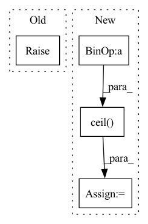

Pattern ID :3829
Before Change
:return:
if p.size(1) > 1:
raise ValueError("Not Supported shape for propbabilty.")
p = p.cpu().clone()
features = features.cpu().clone()
After Change
batch_size = p.size(0)
// split the tensors into smaller batches and multi-process them
p_split = torch.split(p, math.ceil( batch_size / self.num_workers) )
feat_split = torch.split(features, math.ceil(batch_size / self.num_workers))
with mp.Pool(processes=self.num_workers) as pool:In pattern: SUPERPATTERN
Frequency: 3
Non-data size: 4
Instances Fragment ID: 14554654
Project Name: turagalab/decode
Commit Name: 6dc5f8a1489142594a36e7e4f6865ea8f0e309d4
Time: 2019-09-11
Author: gitdev@LRM.photo
File Name: deepsmlm/neuralfitter/post_processing.py
M Class Name: ConsistencyPostprocessing
N Class Name: ConsistencyPostprocessing
M Method Name: _cluster_mp(3)
N Method Name: _cluster_mp(3)
M Parent Class: PostProcessing
N Parent Class: PostProcessing
M File Name: deepsmlm/neuralfitter/post_processing.py
N File Name: deepsmlm/neuralfitter/post_processing.py
M Start Line: 481
M End Line: 506
N Start Line: 468
N End Line: 492
Before Change
pass
def get_lr(self):
raise NotImplementedError
class LinearWarmup(LRScheduler):After Change
tmp_epoch_num = self.last_epoch
tmp_decay_steps = self.decay_steps
if self.cycle:
div_res = math.ceil( float(self.last_epoch) / float(self.decay_steps))
if self.last_epoch == 0:
div_res = 1
tmp_decay_steps = self.decay_steps * div_res
else:
tmp_epoch_num = min(self.last_epoch, self.decay_steps)
Fragment ID: 14554639
Project Name: tensorlayer/tensorlayerx
Commit Name: cbef9e40fbc27064050f8fbadc064427b7729213
Time: 2022-04-11
Author: jiaronghan@outlook.com
File Name: tensorlayerx/optimizers/lr/torch_lr.py
M Class Name: PolynomialDecay
N Class Name: PolynomialDecay
M Method Name: get_lr(1)
N Method Name: get_lr(1)
M Parent Class: LRScheduler
N Parent Class: LRScheduler
M File Name: tensorlayerx/optimizers/lr/torch_lr.py
N File Name: tensorlayerx/optimizers/lr/torch_lr.py
M Start Line: 94
M End Line: 94
N Start Line: 200
N End Line: 211
Before Change
rank = dist.get_rank() - 1
if rank >= num_replicas or rank < 0:
raise ValueError("Invalid rank {}, rank should be in the interval"
" [0, {}]".format(rank, num_replicas - 1))
self._dataset = datasetAfter Change
self.num_replicas = num_replicas
self.rank = rank
self.epoch = 0
self.num_samples = int(math.ceil( len(self.dataset) * 1.0 / self.num_replicas) )
self.total_size = self.num_samples * self.num_replicas
self.shuffle = shuffle
Fragment ID: 14554636
Project Name: smilelab-fl/fedlab
Commit Name: ad41fdfcaa0df3e84a44fe7bf0ebfd7b7ae2bf5c
Time: 2021-08-02
Author: 928255708@qq.com
File Name: fedlab_utils/dataset/sampler.py
M Class Name: FedDistributedSampler
N Class Name: FedDistributedSampler
M Method Name: __init__(5)
N Method Name: __init__(5)
M Parent Class: torch.utils.data.Sampler
N Parent Class: torch.utils.data.Sampler
M File Name: fedlab_utils/dataset/sampler.py
N File Name: fedlab_utils/dataset/sampler.py
M Start Line: 77
M End Line: 89
N Start Line: 71
N End Line: 80